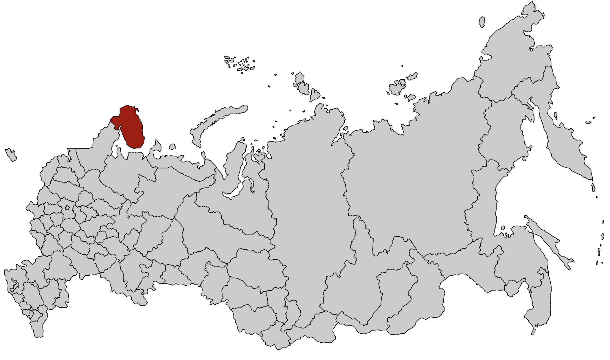
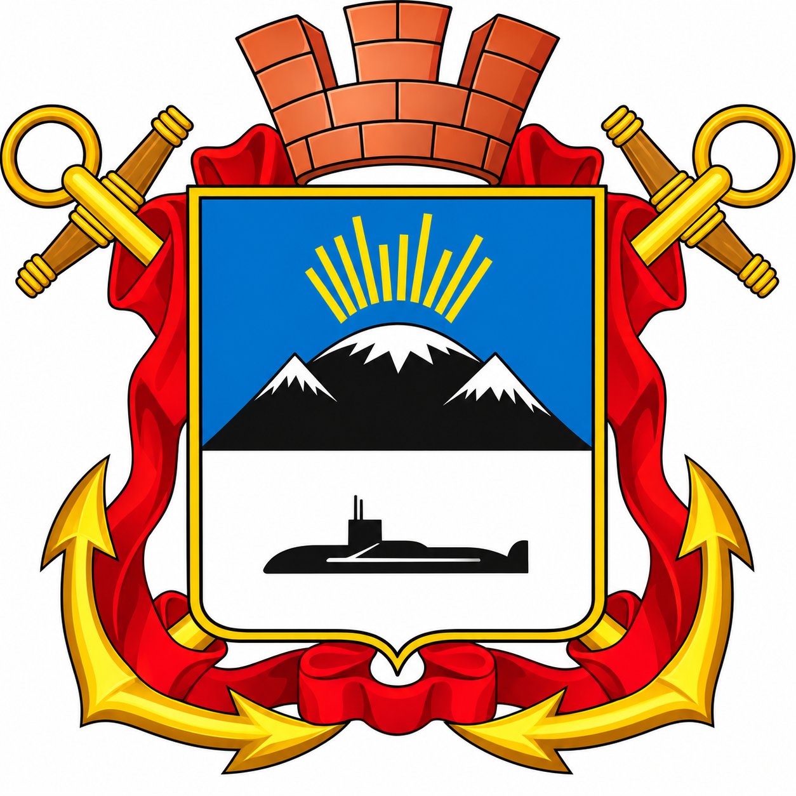

Сезон 2015 - Гаджиево
Место выезда

Нашивка

Командный состав
- Командир — Ившин Павел
- Комиссар — Кононов Василий
Бойцы
- Вишняков Александр
- Горобий Сергей
- Ежов Фёдор
- Елисеев Валерий
- Зинченко Даниил
- Иванов Антон
- Камышков Иван
- Курочкин Павел
- Рааб Иван
- Рыков Андрей
- Сергеева Анастасия
- Смирнова Ольга
- Сорокина Мария
- Ткач Никита
- Чашин Дмитрий
- Четырко Владислав
- Чистилин Ярослав
- Шевченко Павел
- Щелкунов Олег
О сезоне
Работодатель: ООО «АРТЕК».
Объект: Жилой микрорайон для подводников на набережной Сергея Преминина.
Виды работ: укладка асфальта, бордюрного камня, земляные, малярные, отделочные и подсобные работы.
ГУОВ "ОБОРОНСТРОЙ" подготовило приветственный баннер для отряда, а также подарило Монолиту свой флаг.
Фотоальбом